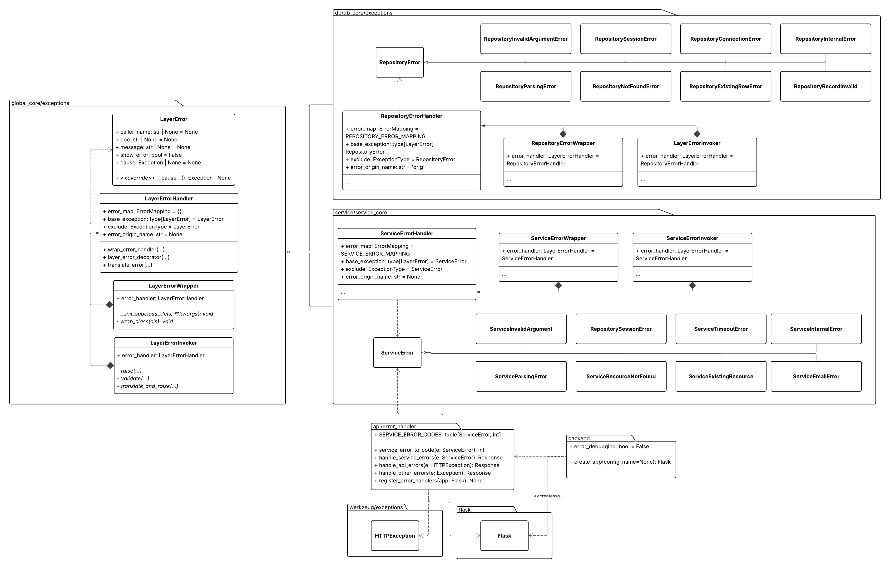

Error Handling
One of our goals for the refactoring process was to construct a standardized error handling system that would propagate exceptions through the chain of layers. Such a system will allow future developers to easily attach error handling to new features, expose only necessary details of lower-level exceptions in production environments, permit full error traceability in development environments, and group similar errors into generalized layer exceptions.
To achieve this, we incorporate Python’s function decorators to wrap class methods across the layers with an error translation mechanism. Any exceptions raised in a decorated function would immediately be mapped to a layer-specific error through translation. When an exception moves from the Service layer to the API, the response receives a status code and an error message that is either generalized or specific, depending on the exception provided and the Flask environment that was created.
The code for the error handling is located in the global_core.exceptions module, and can be used in any of the layers. The API layer uses the error handlers provided by Flask, but the Service and Repository layers utilize the error handling logic described here.

Type Aliases
ExceptionType
Indicates that either a single Exception or a tuple of Exception classes is accepted.
Example:
# Both are valid
example1: ExceptionType = TypeError
example2: ExceptionType = (TypeError, ValueError)
ErrorMapping
A dictionary in which a key, represented by an ExceptionType, is mapped to an Exception class along with a boolean value indicating whether an error message should be displayed.
In the example below, a NotImplementedError should be mapped to an ArgumentError, with its error message displayed publicly. Conversely, TypeError and ValueError exceptions should be mapped to a ParsingError, which does not publicly display its error message.
Example:
class ArgumentError(LayerError):
pass
class ParsingError(LayerError):
pass
mapping = {
NotImplementedError: (ArgumentError, True),
(TypeError, ValueError): (ParsingError, False)
}
LayerError
Bases: Exception
Parent class for exceptions that occur in any of the backend layers.
Source code in src\global_core\exceptions.py
9 10 11 12 13 14 15 16 17 18 19 20 21 22 23 24 25 26 27 28 29 30 31 32 33 34 35 36 37 38 39 40 41 42 43 44 45 46 47 48 49 50 51 52 53 54 55 56 57 58 59 60 61 62 63 64 65 66 67 68 69 70 71 72 73 74 75 76 77 78 79 80 81 82 83 84 85 86 87 88 89 90 91 92 93 94 95 96 97 98 99 100 101 102 103 104 105 106 107 108 109 110 111 112 113 114 115 116 | |
__cause__()
Override the default cause behavior to return exception if provided.
Source code in src\global_core\exceptions.py
114 115 116 | |
__init__(caller_name=None, poe=None, message=None, show_error=False, cause=None)
Constructor for a LayerError instance.
The contents of a message include the following:
- An optional caller prefix in the format
[caller_name] - A public-facing message, either the class's
default_messageor, if debugging is enabled, the location and details of the error.
The example below showcases an example of an error message returned by a GET /history request when debugging mode is enabled:
"[RecordService] Exception raised in get_train_record! RepositoryNotFoundError:
[RecordRepository] Exception raised in get_train_history! Could not get record
with ID = 9999999! | NoResultFound: No row was found when one was required"
When debugging mode is disabled, such as in a production environment, the exception would look like this:
"[RecordService] Could not get record with ID = 9999999!"
Parameters:
| Name | Type | Description | Default |
|---|---|---|---|
caller_name
|
str
|
Name of the caller (typically a class) used as a prefix for the error message, e.g., the name of the service or component raising the exception. Defaults to None. |
None
|
poe
|
str
|
Point of error that identifies where in the code the exception was raised, e.g., a function or method name. Only included in the message when debugging is enabled. Defaults to None. |
None
|
message
|
str
|
A detailed error message with specifics about the
failure. Only added to the public message when debugging is enabled (via
|
None
|
show_error
|
bool
|
If True, forces the detailed error message and point of
error to be shown regardless of the global |
False
|
cause
|
Exception
|
The exception that is the cause of this error. If provided, this exception is attached to the LayerError instance. Defaults to None. |
None
|
Source code in src\global_core\exceptions.py
15 16 17 18 19 20 21 22 23 24 25 26 27 28 29 30 31 32 33 34 35 36 37 38 39 40 41 42 43 44 45 46 47 48 49 50 51 52 53 54 55 56 57 58 59 60 61 62 63 64 65 66 67 68 69 70 71 72 73 74 75 76 77 78 | |
LayerErrorHandler
Provides various methods for translating exceptions that occur in any of the
backend layers. This class is intended to be extended and configured for each of the layers
so that exceptions in those respective layers are translated into the appropriate
LayerError for that particular layer.
The class attributes below should be configured to the suitable values for a given layer.
Attributes:
| Name | Type | Description |
|---|---|---|
error_map |
ErrorMapping
|
A dictionary mapping of exception translations. See
|
base_exception |
type[LayerError]
|
The fallback exception type raised when a
caught exception has no matching entry in |
exclude |
ExceptionType
|
Exception type(s) that should be ignored in
translation entirely. Useful for allowing certain exceptions to propagate
without interference. See |
error_origin_name |
str
|
Some exceptions include the specific error type or the exception origin within a particular attribute. If this parameter is set, the methods in this class will first search for the specified attribute within the exception that requires translation. Defaults to None. |
Source code in src\global_core\exceptions.py
118 119 120 121 122 123 124 125 126 127 128 129 130 131 132 133 134 135 136 137 138 139 140 141 142 143 144 145 146 147 148 149 150 151 152 153 154 155 156 157 158 159 160 161 162 163 164 165 166 167 168 169 170 171 172 173 174 175 176 177 178 179 180 181 182 183 184 185 186 187 188 189 190 191 192 193 194 195 196 197 198 199 200 201 202 203 204 205 206 207 208 209 210 211 212 213 214 215 216 217 218 219 220 221 222 223 224 225 226 227 228 229 230 231 232 233 234 235 236 237 238 239 240 241 242 243 244 245 246 247 248 249 250 251 252 253 254 255 256 257 258 259 260 261 262 263 264 265 266 267 268 269 270 271 272 273 274 275 276 277 278 279 280 281 282 283 284 285 286 287 288 289 290 291 292 293 294 295 296 297 298 299 300 301 302 303 304 305 306 307 308 309 310 311 312 313 314 315 316 317 318 319 320 321 322 323 324 325 326 327 328 329 330 331 332 333 334 335 336 337 338 339 340 341 342 343 344 345 346 347 348 | |
layer_error_decorator(message=None)
classmethod
Decorator to provide error translation for exceptions in backend layers.
See translate_error for details on the error-handling strategy.
This decorator is applied to instance methods to automatically catch exceptions, translate
them into layer-specific errors using an error_map, and re-raise them while preserving
the original exception as the cause.
Parameters:
| Name | Type | Description | Default |
|---|---|---|---|
message
|
str
|
A custom error message. Defaults to None. |
None
|
Returns:
| Type | Description |
|---|---|
callable
|
The original function wrapped with exception handling logic, with its signature and metadata preserved. |
Raises:
| Type | Description |
|---|---|
LayerError
|
A translated exception determined by |
Exception
|
If the exception matches a type in |
Example
# The function below will automatically catch and translate any exceptions
@LayerErrorHandler.layer_error_decorator()
def some_func():
....
Source code in src\global_core\exceptions.py
237 238 239 240 241 242 243 244 245 246 247 248 249 250 251 252 253 254 255 256 257 258 259 260 261 262 263 264 265 266 267 268 269 270 271 272 273 274 275 | |
translate_error(exc, caller_name=None, point_of_error=None, message=None)
classmethod
Translates a provided Exception instance using a map potential exception classes.
Uses general-purpose error-handling logic to produce layer-specific errors. Any
exception not covered by error_map is translated to a fallback exception provided
in base_exception. All exceptions with a matching type in exclude is returned
as-is.
Parameters:
| Name | Type | Description | Default |
|---|---|---|---|
exc
|
Exception
|
required | |
caller_name
|
str
|
Name of the caller (typically a class) used as a prefix for
the error message, e.g., the name of the service or repository raising the exception.
Defaults to |
None
|
point_of_error
|
str
|
Point of error that identifies where in the code the
exception was raised, e.g., a function or method name. Only included in the message
when debugging is enabled. Defaults to |
None
|
message
|
str
|
A custom message to attach to the translated exception. If |
None
|
Returns:
| Type | Description |
|---|---|
LayerError | Exception
|
If a matching translation is found in |
Source code in src\global_core\exceptions.py
277 278 279 280 281 282 283 284 285 286 287 288 289 290 291 292 293 294 295 296 297 298 299 300 301 302 303 304 305 306 307 308 309 310 311 312 313 314 315 316 317 318 319 320 321 322 323 324 325 326 327 328 329 330 331 332 333 334 335 336 337 338 339 340 341 342 343 344 345 346 347 348 | |
wrap_error_handler(func, message=None)
classmethod
Wraps a function with a general-purpose error-handling strategy.
Catches exceptions and translates them into layer-specific errors the specified
error_map. Any exception not covered by error_map or exclude
is caught and re-raised as the provided base_exception or itself, respectively.
Preserves the original exception as the cause via raise ... from e.
Parameters:
| Name | Type | Description | Default |
|---|---|---|---|
func
|
callable
|
The function being wrapped with the error handling logic. |
required |
message
|
str
|
A custom message to attach to the translated exception.
If None, the message defaults to a string of the form |
None
|
Returns:
| Type | Description |
|---|---|
callable
|
The original function wrapped with exception handling logic with its signature and metadata preserved. |
Raises:
| Type | Description |
|---|---|
LayerError
|
Raises a translated exception determined by |
Exception
|
If the raised exception matches a type in |
Example
def some_func(arg):
...
# Does not translate exceptions
some_func(1)
wrapped = LayerErrorHandler.wrap_error_handler(
func=some_func,
message="Error raised, this isn't good..."
)
# Does translate exceptions
wrapped(1)
Notes:
- This is intended for instance methods.
- The caller's class name and function name are automatically captured
and passed to
translate_error. - The inner
decoratoruses*argsand assumesargs[0]is the instance of the class in which the method being wrapped is associated with.
Source code in src\global_core\exceptions.py
150 151 152 153 154 155 156 157 158 159 160 161 162 163 164 165 166 167 168 169 170 171 172 173 174 175 176 177 178 179 180 181 182 183 184 185 186 187 188 189 190 191 192 193 194 195 196 197 198 199 200 201 202 203 204 205 206 207 208 209 210 211 212 213 214 215 216 217 218 219 220 221 222 223 224 225 226 227 228 229 230 231 232 233 234 235 | |
LayerErrorInvoker
Provides instance methods used for raising exceptions.
See source code for the available methods.
Attributes:
| Name | Type | Description |
|---|---|---|
error_handler |
type[LayerErrorHandler]
|
Defines the type of
|
Source code in src\global_core\exceptions.py
382 383 384 385 386 387 388 389 390 391 392 393 394 395 396 397 398 399 400 401 402 403 404 405 406 407 408 409 410 411 412 413 414 415 416 417 | |
LayerErrorWrapper
A superclass that wraps all subclass methods with the layer error handling logic in
LayerErrorHandling.
Attributes:
| Name | Type | Description |
|---|---|---|
error_handler |
type[LayerErrorHandler]
|
Defines the type of
|
Source code in src\global_core\exceptions.py
350 351 352 353 354 355 356 357 358 359 360 361 362 363 364 365 366 367 368 369 370 371 372 373 374 375 376 377 378 379 | |